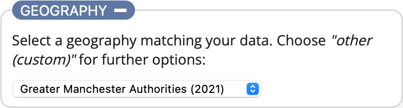

Choroplether documentation
Introduction
Choroplether is a web application that allows you to create choropleth maps in Vega-Lite without having to write all the code yourself. The resulting output can be saved as an SVG or PNG image or opened within the Vega Editor for further customisation. You can also embed the map in a webpage using Vega-embed if you require an interactive visualisation.

You supply some suitably formatted data, select or provide a spatial geography that matches the data and then customise the appearance. The interface is split into 3 sections: Data, Geography and Design, each can be collapsed and expanded as required by activating the toggle button at the top of each section. The app attempts to update the visualisation as you make changes in any of the sections, or when you activate the UPDATE button.
Demonstration
 The app loads with an example dataset already visualised: mid-2017 population estimates from the Office for National Statistics for the electoral wards of Trafford.
The app loads with an example dataset already visualised: mid-2017 population estimates from the Office for National Statistics for the electoral wards of Trafford.
Expand the Design section using the toggle button and add a title by entering some text in the Map title: text box. Activate the UPDATE button and your title will be added to the map.
Next try changing the palette from tealblues to oranges.
Finally select each of the different scale options and see how the map visualisation and legend changes (you can find out what each scale option does in the Design section of this documentation). This should give you an idea of how to customise the output. The next section explains how to create a map based on your own data.
Data
 This is where you specify the dataset that will be visualised. You can do this by choosing a local file from your device or entering either the URL (must start with https://) of a data file or the contents of the file itself into the text box provided. The data can be in either CSV or JSON format. The links provide you with example files which you can use as a template to help ensure you structure your data correctly. Once you have entered some data the app will attempt to visualise it. If your data relates to the geography currently selected in the Geography section it should display a map straightaway, otherwise the warning notification will be displayed asking you to check your data and/or the geography.
This is where you specify the dataset that will be visualised. You can do this by choosing a local file from your device or entering either the URL (must start with https://) of a data file or the contents of the file itself into the text box provided. The data can be in either CSV or JSON format. The links provide you with example files which you can use as a template to help ensure you structure your data correctly. Once you have entered some data the app will attempt to visualise it. If your data relates to the geography currently selected in the Geography section it should display a map straightaway, otherwise the warning notification will be displayed asking you to check your data and/or the geography.
 The warning message means either that the data you have provided doesn't match the currently selected geography (the next section explains this in more detail) or there is something wrong with your data. The most important aspects are:
The warning message means either that the data you have provided doesn't match the currently selected geography (the next section explains this in more detail) or there is something wrong with your data. The most important aspects are:
1. The data must contain the field "value" which contains the values to be visualised.
2. Both the data and the geography must contain the field "area_code" as this is the joining variable used to match the data to the spatial geography. The only exception to this is if you are using a custom geography which doesn't have area codes defined for it, such as Trafford Localities. In this case both the data and the geography must contain the field "area_name".
You can find the ONS area codes for different administrative and statistical geographies from the Open Geography Portal.
Geography
 The geography is a spatial data file which describes the shapes associated with the data (e.g. the Electoral Wards within a Local Authority) as polygons using latitude and longitude coordinates. The list is pre-populated with different geographic boundaries within Trafford and Greater Manchester. If your data is related to a different geographic location or type of geography select the Other (custom) option.
 You can now provide your geography in a similar way to the data: choosing a local file from your device or entering either the URL (must start with https://) of a geography file or the contents of the file itself into the text box provided.
You can now provide your geography in a similar way to the data: choosing a local file from your device or entering either the URL (must start with https://) of a geography file or the contents of the file itself into the text box provided.
The geography must be valid GeoJSON, an open-source spatial format, and each "Feature" must contain the key "area_code" to identify it. This key is used to match the features in the spatial geography to the data. The only exception to this is if you are using a custom geography which doesn't have area codes defined for it, such as Trafford Localities. In this case both the data and the geography must contain the field "area_name". The "area_name" key is also used as a label within the tooltip displaying the data value associated to an area when you select it on the map.
The following example from a spatial file describing Trafford's Electoral Wards demonstrates the use of the area_code key:
{
"type": "FeatureCollection",
"crs": { "type": "name", "properties": { "name": "urn:ogc:def:crs:OGC:1.3:CRS84" } },
"features": [
{
"type": "Feature",
"properties": {
"area_code": "E05000819",
"area_name": "Altrincham"
},
"geometry": {
"type": "MultiPolygon",
"coordinates": [...
The ward of Altrincham has an area_code of E05000819. In the example data files this area_code has the value 12803. This value is assigned to a colour based on the range of values within the dataset and the type of scale you want to use, (this is explained in the Design section). The result is the shape of Altrincham ward will be displayed, filled with the assigned colour.
Design
The final section is where you specify how your finished map will look, allowing you to add titles, attribution, select the palette and also choose the scale used to assign the palette to the data. The palette options provided in the select list are a subset of the Vega sequential scheme names. You can use any palette listed via the link within Vega-Lite, but Choroplether will only allow sequential palettes (single-hue and multi-hue) to be used. This is because sequential palettes are the most appropriate types to use for a choropleth map displaying differences in continuous data (e.g. population) rather than categorical data. If the palette you want is not listed, you can choose the Other (custom) option which will then display a text box for you to type in the scheme name. If you require a non-sequential palette you can edit the visualisation within the Vega Editor, (the Exporting and further editing section has more information about this).
The scale determines how the colours are assigned to the map based on the data being displayed. There are 3 options: Linear, Quantile and Equal intervals. An additional Intervals selection list appears except when the Linear option is chosen.
- Linear: Assigns a unique colour from the palette to each unique value in the dataset range
- Quantile: Splits the dataset range into the number of intervals specified in the intervals select list, assigning an equal number of observations to each interval. The range of values within each interval can be different.
- Equal intervals: Splits the dataset range into the number of intervals specified in the intervals select list, assigning an equal range of values within each interval. The number of observations within each interval can be different.
The choice of scale depends on your data and what you are trying to show with the visualisation. The number of intervals available are between 4 and 7 inclusive. If you require a different number you will need to use the Vega Editor.
Exporting and further editing
 Located in the top-right corner of the map visualisation is a circle icon containing 3 dots. Selecting this icon provides the export options available to you.
Located in the top-right corner of the map visualisation is a circle icon containing 3 dots. Selecting this icon provides the export options available to you.
If you are happy with your visualisation and simply need a static graphic to include in a report or presentation you can choose either the Save as SVG or Save as PNG options to create an image file in the relevant format.
To embed the interactive visualisation within a webpage you will need to choose View Source which provides the Vega-Lite specification (essentially the code) of your visualisation. You will then need to use the Vega-Embed tool (as Choroplether does) along with your specification. (The View Compiled Vega option is only relevant if you need to use features from the full Vega specification as opposed to Vega-Lite.)
Finally, Open in Vega Editor allows you to tweak and customise your visualisation further by editing the code in the online editor. To use this effectively you will need to read the Vega-Lite documentation and understand the Vega-Lite specification.
Credits
Choroplether was created using the following:
- Vega-Lite - (C) University of Washington Interactive Data Lab (LICENCE)
- Vega-Embed - (C) University of Washington Interactive Data Lab (LICENCE)
- Fontawesome - (C) Fonticons, Inc. All rights reserved (LICENCE)
- All other code by Trafford Data Lab (LICENCE)